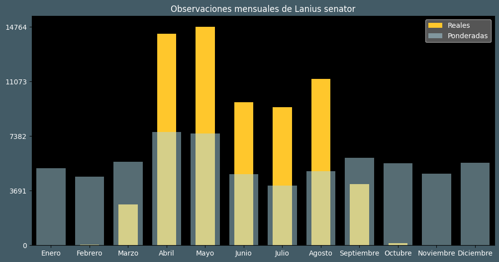

Observaciones por mes
Observations por hora

Categoría IUCN: ?
Género: Lanius
Familia: Laniidae
Orden: Passeriformes
Descubrimiento: Linnaeus (1758)
| Idioma | Nombre |
|---|---|
| Afrikaans (af) | ? |
| Arabic (ar) | صُرَد أحمر القنة |
| Belarusian (be) | Чырвонагаловы грычун |
| Bulgarian (bg) | Червеноглава сврачка |
| Catalan (ca) | Capsigrany comú |
| Chinese (zh) | 林䳭伯劳 |
| Chinese traditional (zh-TW) | 林鴝伯勞 |
| Croatian (hr) | Riđoglavi svračak |
| Czech (cs) | Ťuhýk rudohlavý |
| Danish (da) | Rødhovedet tornskade |
| Dutch (nl) | Roodkopklauwier |
| English (en) | Woodchat shrike |
| Estonian (et) | Punapea-õgija |
| Finnish (fi) | Punapäälepinkäinen |
| French (fr) | Pie-grièche à tête rousse |
| German (de) | Rotkopfwürger |
| Greek (el) | Κοκκινοκεφαλάς |
| Hebrew (he) | חנקן אדום-ראש |
| Hungarian (hu) | Vörösfejű gébics |
| Icelandic (is) | Trjásvarri |
| Indonesian (id) | ? |
| Italian (it) | Averla capirossa |
| Japanese (ja) | ズアカモズ |
| Korean (ko) | ? |
| Latvian (lv) | Sarkangalvas čakste |
| Lithuanian (lt) | Rudagalvė medšarkė |
| Maceodnian (mk) | Црвеноглаво страче |
| Malayalam (ml) | ? |
| North_sami (se) | Ruksesoaiskirri |
| Norwegian (no) | Rødhodevarsler |
| Persian (fa) | سنگ چشم سرحنایی |
| Polish (pl) | Dzierzba rudogłowa |
| Portuguese (pt) | Picanço-barreteiro |
| Russian (ru) | Красноголовый сорокопут |
| Serbian (sr) | Crvenoglavi svračak |
| Slovak (sk) | Strakoš červenohlavý |
| Spanish (es) | Alcaudón común |
| Swedish (sv) | Rödhuvad törnskata |
| Thai (th) | ? |
| Turkish (tr) | Kızıl başlı örümcekkuşu |
| Ukrainian (uk) | Сорокопуд червоноголовий |